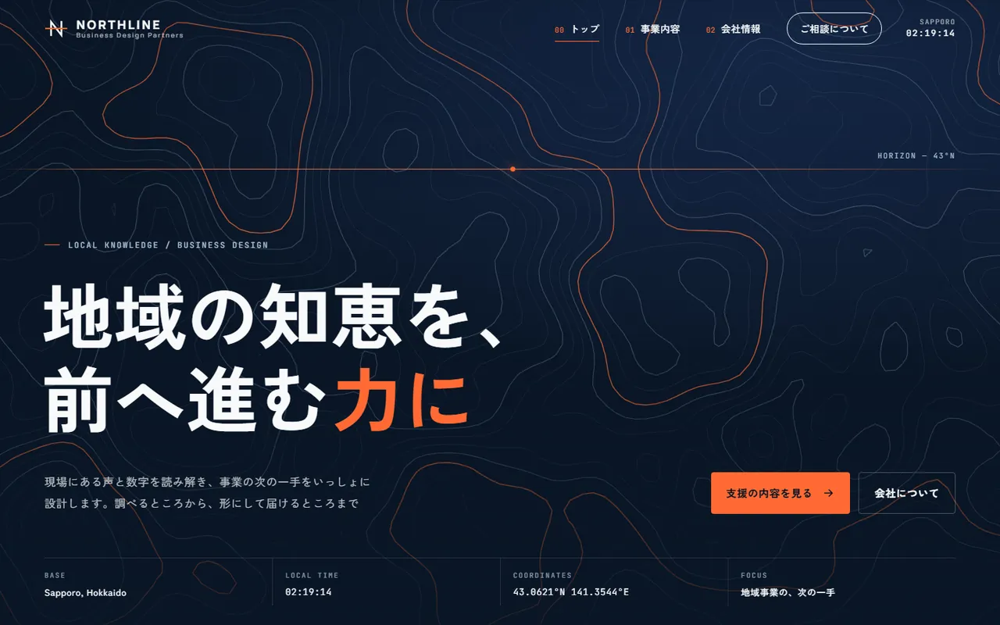

想定する困りごと
「地域に貢献します」だけでは、何をする会社か伝わらない。工事の種類も、頼める規模も、探さないと分からない。
制作例の解説 / DESIGN NOTES
何をする会社かが、最初の一行で分かるように。

「地域に貢献します」だけでは、何をする会社か伝わらない。工事の種類も、頼める規模も、探さないと分からない。
トップ、工事の内容、会社情報の3ページ。トップは「何の会社か」→「よくある相談」→「工事の内容」→「ご連絡から着工まで」の順で、迷わず下まで読めるようにしています。
濃紺の地に、社名の由来である「北へ延びる一本の道」をオレンジの線で通しました。背景は地形図のような等高線で、マウスの動きに反応します。よくある相談は、お客さまの言葉（「駐車場に水たまりができる」）のまま並べ、それぞれ該当する工事のページへつなげています。代表者名・住所・許可番号・施工実績は、架空の内容を作らずに「載せていない」と明記しています。
企業サイトは5ページ109,800円〜（税込）が目安です。この3ページ構成は1ページ29,800円の対象ではありません。ページ数、文章量、画像点数、更新方法を確認し、着手前に総額を提示します。
掲載する事業内容・会社情報の確認と、外部サービスへ案内する範囲を見積もり時に整理します。サンプルのような動きをどこまで入れるかも、ご予算に合わせてご相談します。会員機能や独自システムは対象外です。
この解説は架空の自主制作の設計意図です。実案件の成果・アクセス増加・売上改善を示すものではありません。